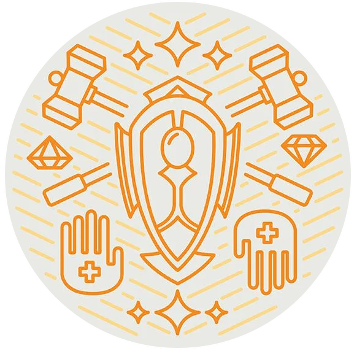

Soldier

Class Description
Soldiers are the embodiment of discipline, training, and tactical prowess. These warriors are the backbone of armies, known for their unwavering dedication to the art of combat and their ability to adapt to a variety of situations. Soldiers undergo rigorous training in various weapons and combat techniques, making them versatile and well-prepared for any challenge that may arise on the battlefield. They excel in teamwork, often forming the core of military units, and are adept at both offense and defense.
Soldiers possess a deep understanding of strategy, allowing them to anticipate their enemies’ moves and make quick, calculated decisions. They are skilled in using a wide array of weapons, from swords and spears to bows and firearms, making them adaptable in different combat scenarios.
In times of war, Soldiers are the protectors of their allies and the embodiment of order amidst the chaos of conflict. They are respected for their dedication to their craft and their ability to execute precise, devastating maneuvers with unerring accuracy. Whether defending their homeland or carrying out a strategic offensive, Soldiers are the bedrock of any organized military force.
Talent List
Melee Attack
| Tier | Name | Description |
|---|---|---|
| 1 | Melee Attack | Make an attack with a weapon against a single target. Damage and range are specified by the weapon. |
| +1 | Crippling Blow | Cripple a creature, slowing it for one round. |
| +1 | Power Attack | Enhance an attack, adding your strength score to the damage. |
| +1 | Lacerate | Add 1d4 bleeding damage to an attack made with a slashing weapon. |
| +1 | Overpower | Make a devastating attack. Gain advantage on the damage roll. |
| +1 | Sunder Attack | Unleash a sundering attack that targets an object, converting the damage made with a bludgeoning weapon into sunder damage. The armor of the object applies as normal. |
| +2 | Blitz Attack | Attack a second target in close range from the first one, reappearing adjacent to the second one (at a free location of your choice). You are considered hidden for the second attack. |
| +2 | Disarm | Attempt to disarm a creature, knocking its weapon down. |
| +3 | Cleave | Turn a melee attack into a whirlwind, hitting all creatures adjacent to you. |
Defensive Stance
| Tier | Name | Description |
|---|---|---|
| 2 | Defensive Stance | Assume a defensive stance, increasing your armor by 1. This feat stacks on itself. |
| +1 | Aura of a Soldier | Grant your defensive stance bonuses to an ally in close range. You do not benefit from the bonuses. |
| +2 | Guardian Angel | Choose a single creature within short range. Half of the physical damage they take is redirected to you. Only the original target’s armor is applied to the damage. |
Unstoppable
| Tier | Name | Description |
|---|---|---|
| 1 | Unstoppable | Use brute force to ignore difficult terrain and advance in normal speed. |
| +1 | Slam | Attempt to knock down a creature (strength vs strength/dexterity contest), rendering it prone. |
| +2 | Grapple | Attempt to grapple a creature of your size or smaller (strength vs strength/dexterity contest). The grappler is considered slowed, while the grappled one immobile. |
| +2 | Force Wave | Unleash a force wave, attempting to knock (strength vs strength/dexterity contest) everyone in close range 2m away from you. |
| +2 | Leap | You make a leap, landing on a free spot in close range. |
| +3 | Charge | You dash forward, moving in a straight line within short range. If you make a melee attack at the end of your movement, it has advantage on the damage roll. |
Relentless
| Tier | Name | Description |
|---|---|---|
| 2 | Relentless | You become enraged against a creature (take regular sanity damage). Until your next turn, you are immune to being confused, sorrowful, charmed, or frightened. You cannot select this talent, if you have a tranquil score of 4 or 5. |
| +2 | Bloodthirst | You heal for 1d8 points of Vitality every time you successfully hit your antagonist with a melee attack. |
| +2 | Aura of a Berserker | Share the relentless talent activated on you with an ally in medium range. |
| +2 | Reckless | The weapon dice are doubled. You cannot use any reactions until your next turn. |
Ranged Attack
| Tier | Name | Description |
|---|---|---|
| 2 | Ranged Attack | Make an attack with a ranged weapon against a single target. Damage and range are specified by the weapon. |
| +1 | Point-Blank Shot | Gain advantage on an attack toward a target in short range. |
| +2 | Precision Strike | Attack the target in its weak spots. Double the weapon damage dice. |
| +2 | Shoot Through | Shoot an projectile through a second target in close range to the first one and in straight line with you and them. You are considered hidden for the second attack. |
| +2 | Sniper | Double the weapon’s range. |
Alert
| Tier | Name | Description |
|---|---|---|
| 1 | Alert | You are ready to react to the pace of combat, even out of your turn. The points utilized are expended from your next round. |
| +2 | Block | Use your shield to block an incoming ranged attack. |
| x | Arcane Disrupt | Disrupt one adjacent spellcaster. Spend x strength points to cancel a spell that requires x intelligence. |
| x | Retaliation | After taking a hit from an enemy melee attack, make an immediate counter melee attack. You can add enchancements to the melee attack and spend a corresponding amount of strength as regular. |